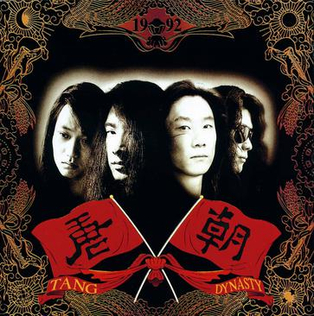

El cantante y guitarrista rítmico Ding Wu , el bajista Zhang Ju y el guitarrista chino-estadounidense Kaiser Kuo cofundaron Tang Dynasty a principios de 1989. Kaiser se fue poco después para regresar a los Estados Unidos. Liu "Lao Wu" Yijun tomó su lugar y, según Kaiser, se convirtió en el primer "héroe de la guitarra" de China. [1] En 1991, la banda lanzó su versión de metal / rock de " The Internationale " en chino.
Tang Dynasty saltó a la fama con su álbum debut homónimo , lanzado en diciembre de 1992. El álbum vendió oficialmente alrededor de 2.000.000 de copias auténticas en Asia y en el extranjero, sin contar las multitudes más de copias infractoras . Su sonido es en parte rock progresivo y metal artístico y en parte técnica vocal tradicional china. La poesía lírica y los arreglos musicales pretendían remontarse a los gloriosos días de la antigua civilización china ; en particular, el epítome artístico y cultural de la historia china tal como la representa popularmente la era de la dinastía Tang .
El bajista Zhang Ju murió el 11 de mayo de 1995, cuando su motocicleta chocó con un camión en el paso elevado de la autopista Zizhuqiao en el oeste de Beijing. Gu Zhong se convirtió en bajista, pero en agosto Liu dejó la banda. El cofundador Kaiser Kuo se reincorporó como guitarrista en agosto de 1996.
El lanzamiento de la banda en 1998, Epic, fue su segundo álbum, siete años después de su disco debut. Kaiser volvió a separarse de Tang Dynasty en junio de 1999 y más tarde formó otra banda de metal / rock muy reconocida, Spring and Autumn (Chunqiu). Kaiser fue reemplazado por el ex líder de Iron Kite, Yu Yang, y luego por el joven virtuoso de la guitarra Chen Lei a fines de 2000. Después de algunos cambios de miembros, Liu se reincorporó al grupo en 2002.
Tang Dynasty lanzó su tercer álbum Romantic Knight (" Langman Qishi ") a mediados de 2008, con " Feng Shan Ji " [ aclaración necesaria ] como pista principal del álbum. Kaiser apareció en el documental occidental de Sam Dunn , Global Metal , lanzado ese mismo año.
En enero de 2009, Liu anunció su segunda salida de la banda debido a "razones personales"; luego trabajó con un artista de rock neoclásico austriaco en un álbum que se anunció que saldrá al mercado en 2010. El vocalista Ding ocupa actualmente el lugar del segundo guitarrista. En febrero de 2010, Ding Wu anunció que la banda se estaba preparando para el cuarto lanzamiento que saldrá a finales de año. El mes siguiente, Tang Dynasty lanzó un EP de dos canciones titulado Ups and Downs . La banda lanzó su cuarto álbum, Thorn , en noviembre de 2013, y realizó una gira fuera de China por primera vez en casi dos décadas.
El 20 de febrero de 2019, Tang Dynasty reveló en Weibo que el guitarrista principal Chen Lei había sido reemplazado por Liu Jingwei y Fu Dalong, lo que nuevamente convirtió a la banda en una formación de cinco integrantes.